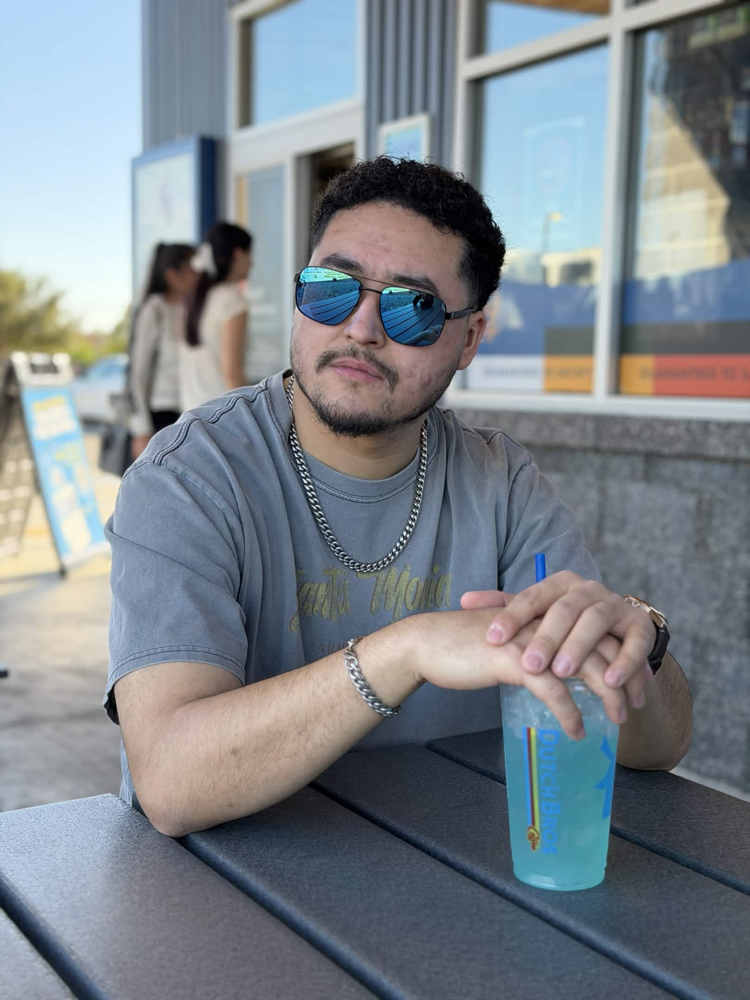

Victoria is a graduating senior at UCR studying biology. And, like many of her STEM peers, she’s an absolute nerd. As a kid, she often escaped into make-believe words through books and movies instead of making real friends, and as an adult, she’s doing the same thing but through more sophisticated methods like video games and TTRPGs (with friends this time!). When she’s not in her own head thinking of new situations to put her characters in, she enjoys making art, writing, birding, and learning about the natural world.
Ruben is a current student at Bakersfield College studying Studio Art and Multimedia. He’s a fanatic of all things art, both digital and physical. When he’s not working his boring retail job, he’s writing, drawing, filming and gaming. He loves storytelling and stories in general.

Navy is an aspiring geochemist who is transferring from Bakersfield College to UC Santa Cruz. They have been playing DnD for 8 years, three of which belong to the amazing group shown on this very webpage! When chemicals aren't haunting their existance, Navy can be found drawing, writing, researching niche topics, or dreaming of Every Character they hail as a blorbo.
Emmanuel is allegedly a 20 something year old hopefull Paleontology student. He's a big ol nerd with a passion for extinct animals and storytelling. As a kid, he would often take a teacher's writng prompt way beyond what was necessary, and now he gets to do that for his own writing prompts as the GM. In his spare time he enjoys TTRPGs, anime, gaming, and a lot of retro media.